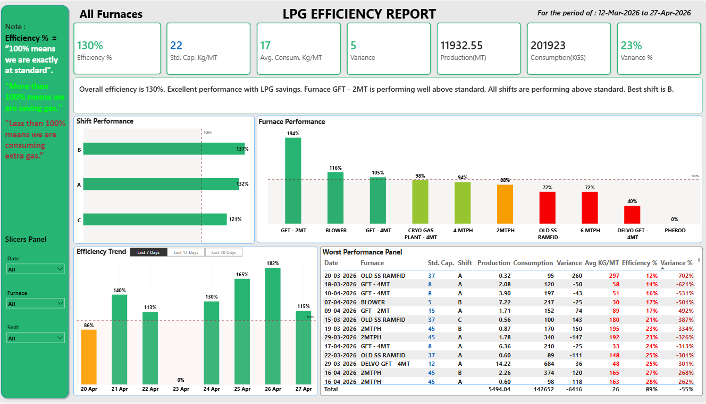
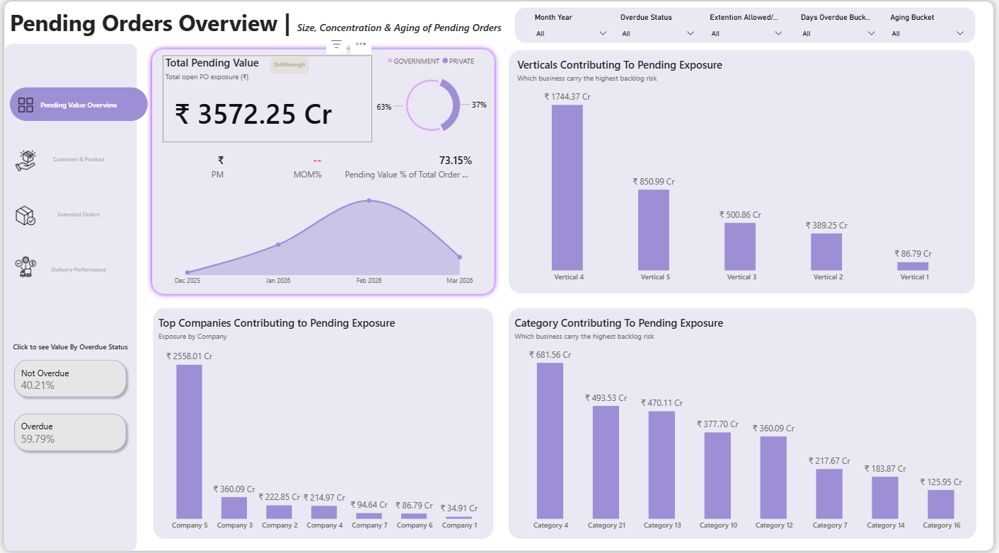
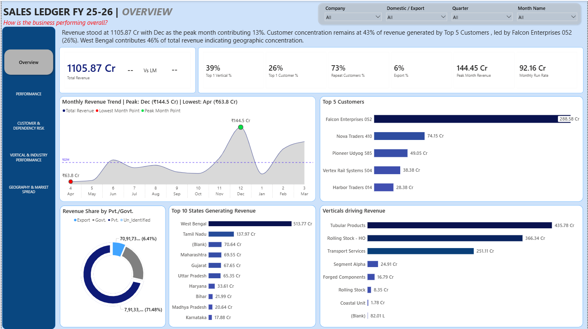
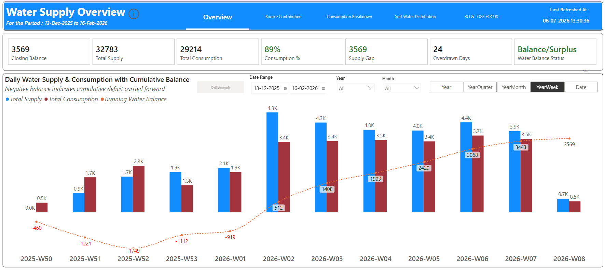
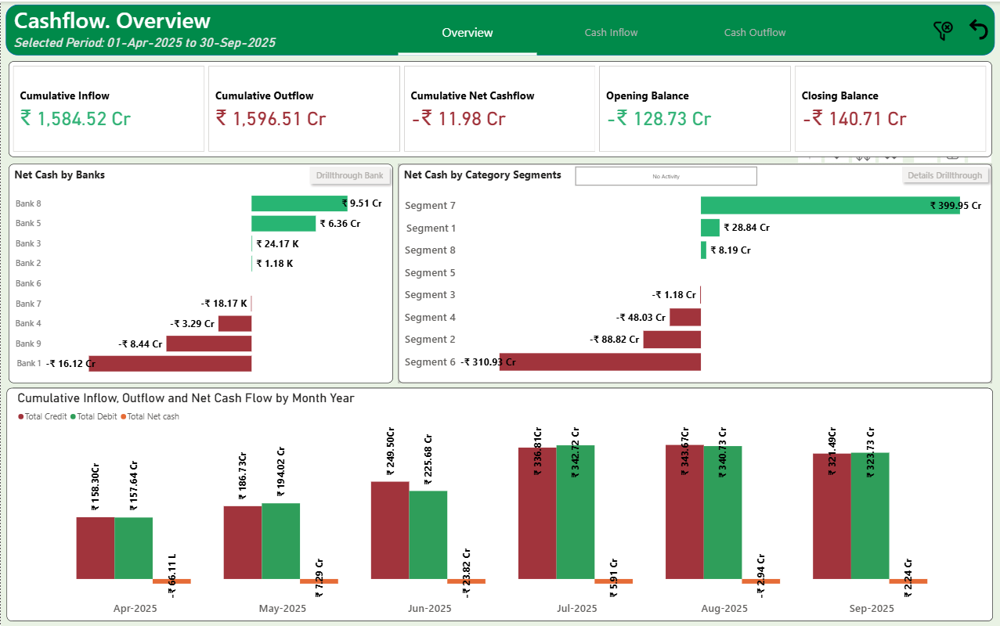
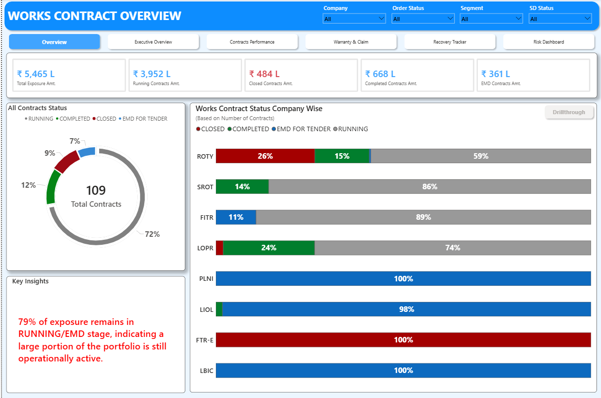

×

> initializing
"Turning data into decisions, insights into growth."
I help organizations unlock actionable insights through dashboards, analytics automation, and executive reporting — built on Power BI, SQL, and DAX.
Years specialized in BI
Dashboards built
Business domains
Reports automated
Bridging business strategy and analytics through data-driven intelligence.
I'm a Business Intelligence Analyst with 5+ years of experience helping organizations transform complex data into strategic business decisions.
At Lalbaba Engineering, I build enterprise-grade analytics solutions that help leadership teams monitor KPIs, identify inefficiencies, and accelerate decision-making.
My expertise spans Power BI, DAX, SQL, Power Query, Excel/VBA, Python, ETL, and data modeling across manufacturing, finance, supply chain, HR, and sales.
I don't just build dashboards — I solve business problems through analytics, automation, and AI-driven reporting.
My journey in business intelligence, analytics, and enterprise reporting.
Real-world dashboards built across manufacturing, finance, supply chain, and business operations.

ManufacturingManufacturing analytics for furnace efficiency and gas optimization.

Supply ChainOrder backlog risk, aging analysis, and escalation visibility.

FinanceExecutive revenue tracking with target vs actual comparison.

ManufacturingUtility analytics with supply-demand balancing and consumption trends.

FinanceBank-wise inflow, outflow and liquidity management reporting.

ManufacturingContract lifecycle monitoring and project risk analysis.
Reusable VBA macros and Python tools built to remove repetitive manual work from reporting workflows.
Splits any table into separate sheets or files based on a selected column header — no hardcoded ranges.
Breaks a single multi-sheet workbook into separate standalone workbook files — one per sheet, automatically.
Scans a folder and consolidates every workbook inside it into a single combined workbook.
Converts plain-English questions into SQL using the OpenAI API, executes the query against a live database, and returns the results.
Core technologies I use to build scalable analytics and business intelligence solutions.
Power BI • DAX • Data Modeling • Dashboard Design • KPI Reporting
SQL • ETL • Power Query • Data Cleaning • Data Transformation
Python • VBA • AI Workflows • Automation • Reporting Bots
Staying ahead in analytics, AI, and business intelligence.
Need a detailed overview of my projects, business impact, technical stack, and professional achievements? Access my resume instantly or connect with me for opportunities.
I am actively available for full-time BI/Data Analyst roles, remote analytics consulting, and Power BI freelance projects.
prasenjit8841@gmail.com
View profile
View portfolio
Quick response for recruiters
Kolkata, West Bengal, India